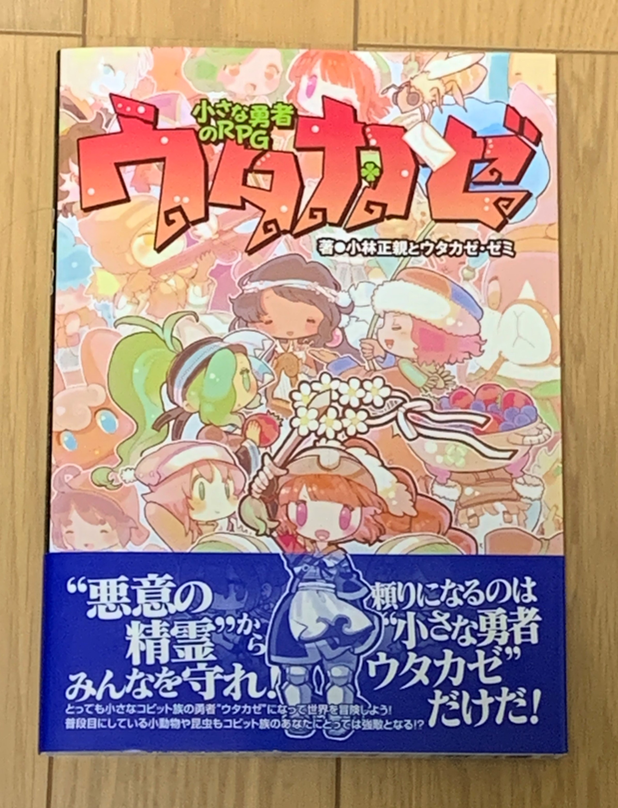
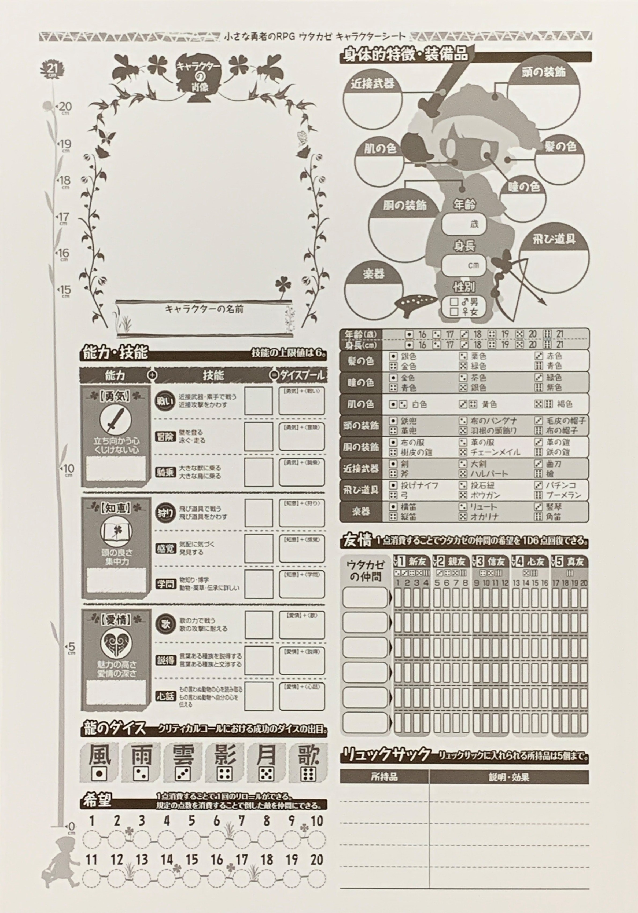
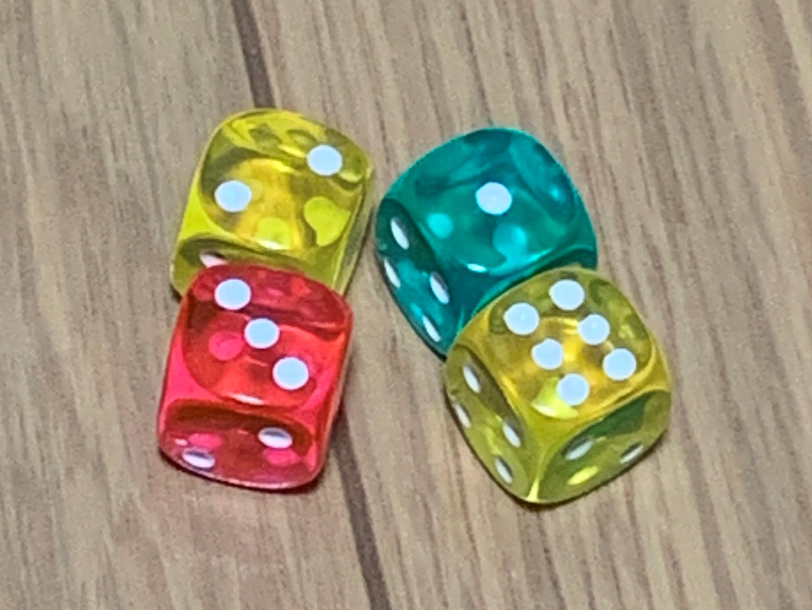

小さな勇者のRPG ウタカゼとは
小さな勇者のRPG ウタカゼは新紀元社出版のTRPG。その名の通り、小人になって世界の悪意と戦う物語である。
プレイヤーは小人であるコビット族をPCに持ち、世界の悪意"虚無"によって悪意に染め上げられた"悪意の精霊"や悪意に染まってしまった動物である"悪しきもの"と戦う。ただし、ウタカゼの世界での戦いは相手を傷つけるためのものではない。悪意から開放するために正気に戻すことが目的である。
(卓ゲ箪笥 Wikiより引用) 上の画像は『小さな勇者のRPG ウタカゼ』基本ルールブックです。


遊ぶ上で必要なもの
ウタカゼは、現在3冊のルールブックがありますが基本ルールブックがあれば遊べます。
残り2冊の『ウタカゼ レベルアップブック』と『ウタカゼキャラバン』は、サプリメントです。
ウタカゼに必要なものは、ルールブック、ダイス・サイコロ、筆記用具です。
上の画像にあるキャラクターシートなどはルールブックに載っています。ウタカゼでは、6面ダイスが2～10個程必要です。
ウタカゼは、ニコニコ動画にPVがあるのでぜひ見てください。